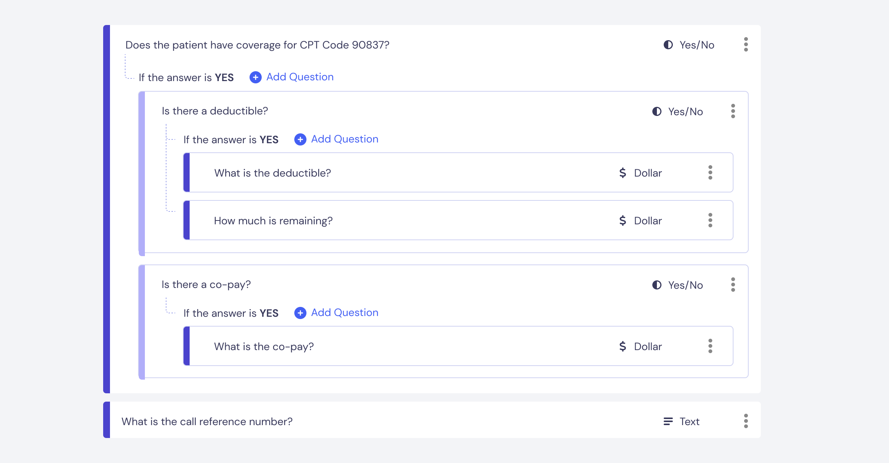
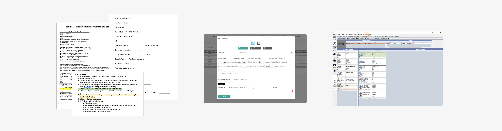
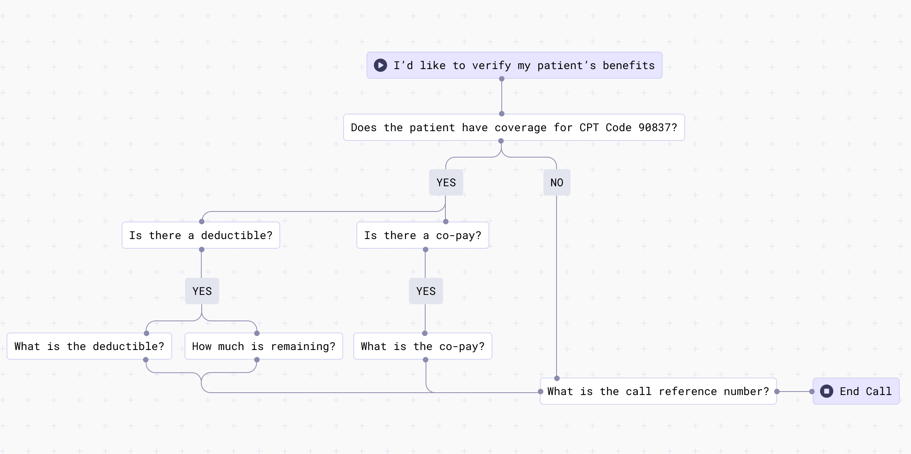
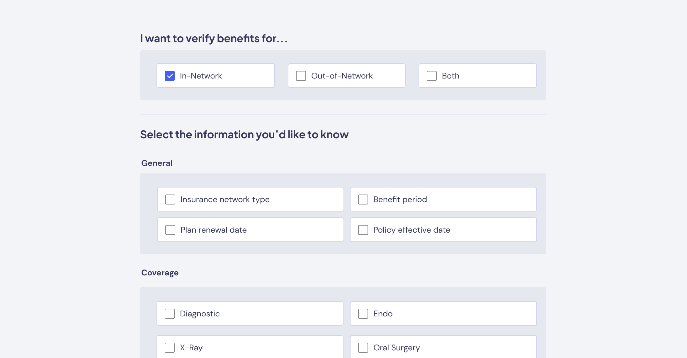

Back

Devise a "formula" for customers to describe the answers they need from the automated calls, and make this solution work for a wide range of call complexities. The solution must also be easily understood by our back-end AI "brain".

Through customer conversations and early onboarding sessions, I identified a wide spectrum of workflows that organizations used to standardize phone calls. Some provider offices relied on literal scripts that dictated exactly what receptionists should say, down to the call introduction. Larger healthcare Revenue Cycle Management (RCM) organizations often used structured internal forms to guide conversations, while others simply documented relevant information directly in their Practice Management Software (PMS) without any need for a formal script playbook.
After synthesizing these patterns, I defined the core requirements for a Script Builder. The tool needed to be intuitive and quick to adopt (our Ops teams consistently emphasized they didn't have time for complex setup or technical onboarding). At the same time, the underlying system needed to be flexible enough to support different scripting approaches and evolve as we uncovered additional use cases.
I explored several potential directions for the Script Builder, which ultimately fell into three broad approaches:
Decision Model

My first concept was a node-based decision model capable of supporting highly complex call scripts. In this framework, users could define questions, apply conditional logic, and construct detailed branching flows tailored to their exact operational needs. While powerful, it quickly became clear that
Answer Checklist

I then explored the opposite end of the spectrum: a simplified model where users would only select the pieces of information they wanted to capture. Instead of defining the questions themselves, they would check off the desired answers, and our system would generate and standardize the corresponding questions internally. This approach had advantages from both an engineering and AI perspective, since standardizing questions could improve consistency and accuracy. However, during discussions with customers it became clear that this model removed too much control and visibility from their workflows.
This option was too opaque.
Form Builder
The final direction balanced the strengths of both approaches. I designed a form-based Script Builder—similar to familiar tools like Google Forms—that allowed teams to define what questions should be asked while keeping the interaction model simple and approachable. This approach provided enough structure for consistent data capture while remaining flexible for different operational styles and balanced usability, control, and technical adaptability.
We implemented v1 of our Script Builder in Fall 2023 and have continued iterating since. The Script Builder evolves as we gain greater clarity on use cases - for example, we've found that many customers want similar scripts, so we've created template "base" scripts that get you 70% of the way there. Our core design didn't box us into a corner, which has allowed us to easily adapt to changes. The Script Builder isn't some ground-breaking feature, but it manages to suit the complex needs of our customers while being easy to understand, and I'm quite happy with that.